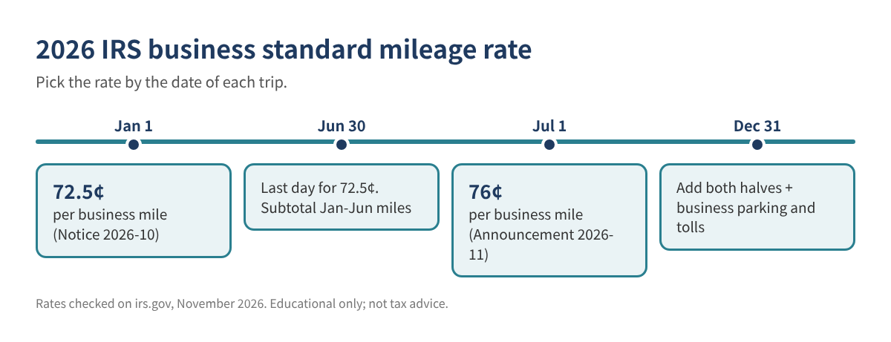
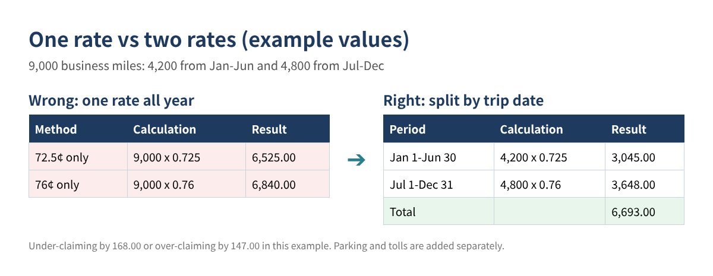
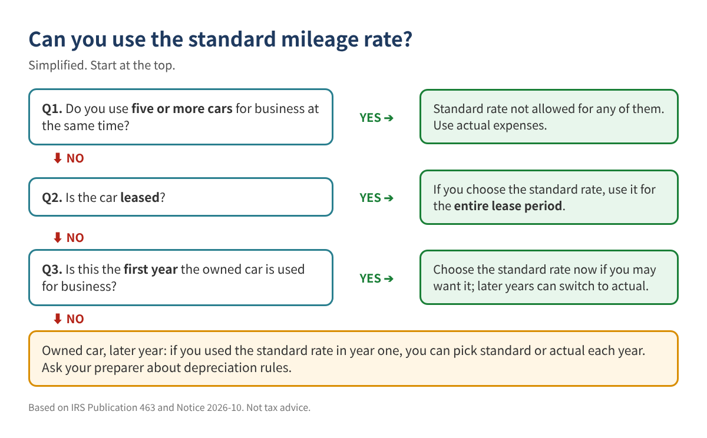

Two IRS Mileage Rates in One Year: How to Log and Calculate Your 2026 Business Mileage Correctly
If you drive for your business, 2026 has a catch. The IRS business standard mileage rate was 72.5 cents per mile from January 1, then the IRS raised it to 76 cents per mile for trips on or after July 1, 2026. Many free templates and apps use one rate for the whole year, which makes your deduction wrong in one direction or the other.
This guide shows how to keep a mileage log the IRS expects, apply the right rate to every trip by its date, add parking and tolls, and compare the standard mileage method with actual vehicle expenses. Everything works in Excel or Google Sheets.
Who this is for: self-employed people, freelancers, gig drivers, contractors, real estate agents and small business owners who use a personal or business vehicle for work.
The 2026 rates (checked on irs.gov)
| Trip date | Business rate per mile | Source |
|---|---|---|
| January 1 - June 30, 2026 | 72.5 cents | IRS Notice 2026-10 |
| July 1 - December 31, 2026 | 76 cents | IRS Announcement 2026-11 |
Table 1. 2026 business standard mileage rates. Medical, moving and charitable rates are different and are not covered here.

You still deduct business parking fees and tolls on top of the standard mileage rate. IRS Publication 463 says: "In addition to using the standard mileage rate, you can deduct any business-related parking fees and tolls." Parking at your regular place of work is commuting and doesn't count.
Step 1: Know which miles count
- Business trips count: driving to a client, a job site, a supplier, the bank for business deposits, or between two work locations.
- Commuting does not count. Publication 463: "You can't deduct commuting expenses no matter how far your home is from your regular place of work."
- Personal stops on a business trip are personal. Log only the business part.
If you have a home office or no regular workplace, the commuting rules are more detailed. Ask your tax preparer how they apply to you.
Step 2: Set up the log
The IRS wants records made at or near the time of the trip, not estimates rebuilt in April. Publication 463 says you "can't deduct amounts that you approximate or estimate." A good log has these columns:
| Date (A) | Start odometer (B) | End odometer (C) | Miles (D) | Round trip? (E) | Destination (F) | Business purpose (G) | Parking & tolls (H) |
|---|---|---|---|---|---|---|---|
| 01/15/2026 | 42,180 | 42,204 | N | Kim Dental, Fort Lee | Install estimate | 6.00 | |
| 03/02/2026 | 18 | Y | Hardware store, Ridgefield | Job materials | 0.00 | ||
| 07/09/2026 | 46,310 | 46,356 | N | Client site, Paramus | Monthly service | 12.50 |
Table 2. Example rows only. Use odometer readings or type the miles; the formulas handle both.
Also record your odometer at January 1 and December 31. You need total miles for the year to work out the business-use percentage.
Step 3: Add the formulas
Business miles for each trip (column I). If odometer readings are filled in, use them; otherwise use the miles typed in column D. Round trips double:
I2: =IF(AND(B2<>"",C2<>""), C2-B2, D2) * IF(UPPER(E2)="Y", 2, 1)
Rate by trip date (column J):
J2: =IF(A2<DATE(2026,7,1), 0.725, 0.76)
A rate table is easier to update next year. Put start dates in a sheet called Rates (A2: 1/1/2026, B2: 0.725; A3: 7/1/2026, B3: 0.76) and use:
J2: =XLOOKUP(A2, Rates!$A$2:$A$10, Rates!$B$2:$B$10, "", -1)
The -1 tells XLOOKUP to take the latest start date on or before the trip date. In older Excel, =VLOOKUP(A2, Rates!$A$2:$B$10, 2, TRUE) does the same with the dates sorted.
Mileage amount (column K):
K2: =ROUND(I2*J2, 2)
Quality checks (column L) catch the usual problems:
L2: =IF(G2="","Missing purpose",IF(AND(B2<>"",C2<>"",C2<B2),"Odometer typo",IF(YEAR(A2)<>2026,"Wrong year","")))
Step 4: Total the year
Jan-Jun miles: =SUMIFS(I:I, A:A, "<"&DATE(2026,7,1)) Jul-Dec miles: =SUMIFS(I:I, A:A, ">="&DATE(2026,7,1)) Mileage amount: =SUM(K:K) Parking & tolls: =SUM(H:H) Business use %: =SUM(I:I) / (Dec 31 odometer - Jan 1 odometer)
Here is a worked example with 9,000 business miles out of 15,000 total miles (example values only):

| Line | Amount |
|---|---|
| Jan-Jun: 4,200 miles x 0.725 | 3,045.00 |
| Jul-Dec: 4,800 miles x 0.76 | 3,648.00 |
| Business parking and tolls | 180.00 |
| Standard mileage method total | 6,873.00 |
| Business-use %: 9,000 / 15,000 | 60% |
| Actual costs: gas 2,400 + insurance 1,500 + repairs 650 + registration 250 | 4,800.00 |
| Business share: 4,800.00 x 60% | 2,880.00 |
| Plus business parking and tolls | 180.00 |
| Actual expense method total (before depreciation) | 3,060.00 |
Table 3. Example values only. Depreciation or lease payments can change the actual-expense side a lot, so this is a first look, not a final answer.
Step 5: Standard rate or actual expenses?
Your choice is limited by a few IRS rules, summarized below from Publication 463 and Notice 2026-10:

- Owned car: to use the standard rate at all, you must choose it in the first year the car is used for business. In later years you can choose either method.
- Leased car: if you choose the standard rate, you must use it for the entire lease period.
- Five or more cars at the same time (such as a fleet): the standard rate is not allowed for any of them.
The actual expense method also includes depreciation (or lease payments), which has its own limits and timing. If the two totals are close, or the car is new, let your tax preparer run the numbers.
Common mistakes
- Using one rate for the whole year. In the example above, that is off by 147.00 to 168.00.
- Logging commuting miles from home to your regular workplace.
- Rebuilding the log from memory at tax time. Records made at or near the time carry more weight.
- Forgetting parking and tolls, which are added on top of the standard rate.
- Missing the year-start and year-end odometer readings, so the business-use percentage can't be proven.
- Switching methods without checking the first-year and lease rules.
FAQ
Do I really need a log if I drive the same route every week?
Yes. You need the mileage for each business use, the date, the destination and the business purpose. A short entry for each trip, made when you drive, is the safest record.
Is a phone app enough?
An app can work if it records the same details: date, miles, destination and purpose. Export it monthly and check that it used the right rate for each half of 2026.
Does the July change affect my January trips?
No. Trips from January 1 to June 30, 2026 stay at 72.5 cents. Only trips on or after July 1 use 76 cents.
What about 2027?
The IRS usually announces the next year's rate late in the year. Add a new row to your rate table when it is published on irs.gov.
Checklist
- ☐ January 1 odometer reading recorded
- ☐ Every business trip logged with date, miles, destination and purpose
- ☐ Rate applied by trip date (72.5 cents before July 1, 76 cents from July 1)
- ☐ Business parking and tolls tracked separately
- ☐ December 31 odometer reading and business-use % calculated
- ☐ Standard vs actual compared; first-year and lease rules checked
- ☐ Log and receipts saved with your tax records
Want the workbook?
Our 2026 Mileage Log & Vehicle Expense Workbook (Etsy and Gumroad) applies both 2026 rates automatically by trip date, handles round trips, parking and tolls, compares standard vs actual expenses, flags missing purposes and odometer typos, and includes a printable glovebox log, with English and Korean instructions.
This article is educational only and is not tax or legal advice; your deduction depends on your facts, and no particular result is guaranteed. Example values are made up. Rates were checked on irs.gov in November 2026; confirm current IRS guidance before filing.
Sources (checked November 2026): IRS, "IRS sets 2026 business standard mileage rate at 72.5 cents per mile, up 2.5 cents" (IR-2025-128): https://www.irs.gov/newsroom/irs-sets-2026-business-standard-mileage-rate-at-725-cents-per-mile-up-25-cents · IRS Notice 2026-10: https://www.irs.gov/pub/irs-drop/n-26-10.pdf · IRS Announcement 2026-11, Internal Revenue Bulletin 2026-29: https://www.irs.gov/irb/2026-29_irb · IRS Topic No. 510, Business use of car: https://www.irs.gov/taxtopics/tc510 · IRS Publication 463, Travel, Gift, and Car Expenses: https://www.irs.gov/publications/p463